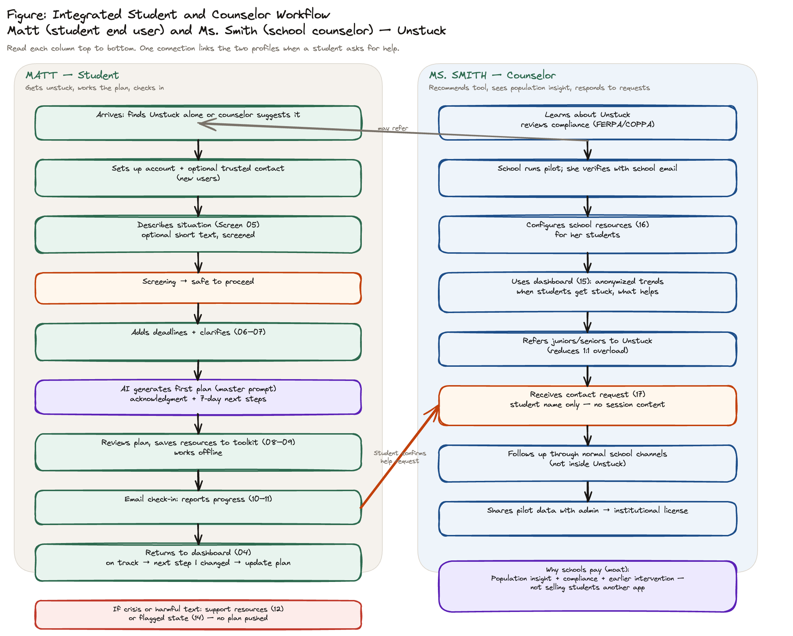

Workflows
How Unstuck works end to end for students and counselors. Use the tabs for journey-specific views; this page shows the integrated map used in the PRD Design section.
Integrated student and counselor workflow
Primary capstone figure: Matt and Ms. Smith in parallel, with one cross-lane connection when the student requests counselor support.

Two parallel lanes
Matt — student
Primary end user
- Discovers Unstuck; creates account and optional trusted contact
- First plan via structured intake + AI plan generation
- Email check-ins, replan when behind, plan update when life changes
- Optionally notifies counselor (name + flag only)
Detail: First session · Check-in & replan
Ms. Smith — counselor
Institutional path · v2 revenue
- Organic discovery via student mention
- Pilot: compliance review, referrals, aggregate dashboard
- Contact requests and pattern observations (no individual session text by default)
- Pilot data supports institutional license conversation
Cross-lane link: Student-initiated counselor contact during check-in or support flow.
Ms. Smith receives name + support flag, not intake or plan content, unless the student separately shares under trusted-contact permissions.
Map to prototype and demo
- Build: Matt first session + at least one check-in/replan cycle
- Demo: Integrated story with brief counselor dashboard (screens 15–17, demo data)
- Wireframe: Interactive v5 · Screen map